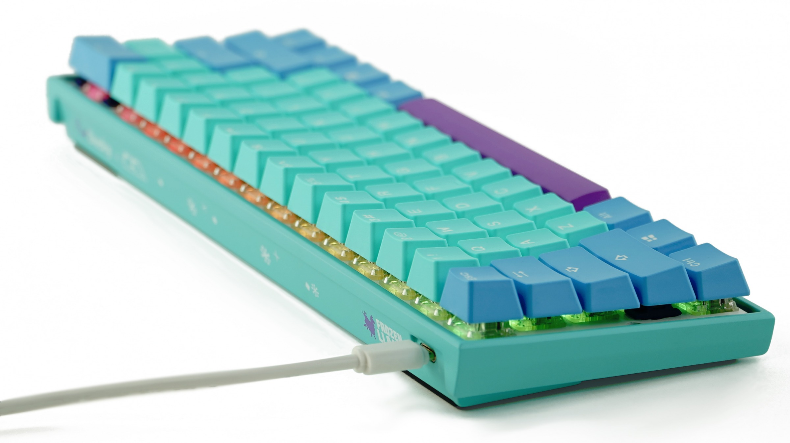
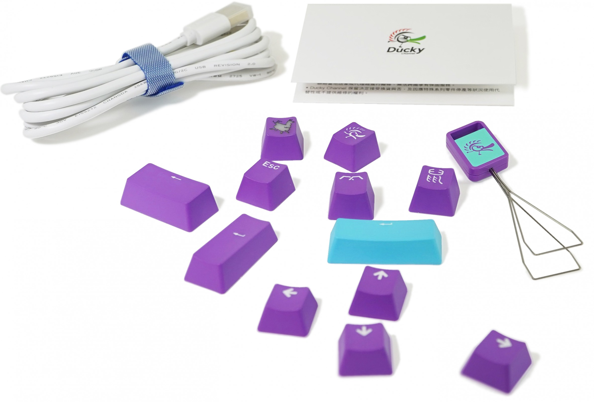

Un nouveau clavier melant esthétique et performance.
Depuis peu, notre équipe avons commencé le design d'un nouveau clavier, révolutionnant les claviers, le Ducky® x Keyspirit x MK Frozen Llama Mecha Mini v2.

Le très célèbre Ducky Mecha Mini v2, avec un magnifique set de keycaps en PBT à double coups, au couleur de Frozen Llama, avec en plus des keycaps illustré et graver pour un style encore plus apprécié.

Avec la possibilité de totalement personaliser ses switchs grâce à sa plaque de retainer de switch universelle, il devient le premier clavier avec tous types de switchs possible. Le chassis est en aluminium, un matériau très intéressant pour sa résistance. Il est compatible avec windows et Linux et à une fréquence de rafraichissement de 1000Hz gràce à son cable USB type C de 150cm. Il sera disponible en édition limitée, sur le site de nos partenaires. L'annonce de sa sorti sera faite sur les réseaux sociaux de Ducky®, car, même si le prototype est fini, nous préférons lui faire une batterie de test afin de s'assurer de sa qualité maximale et de sa fiabilité.